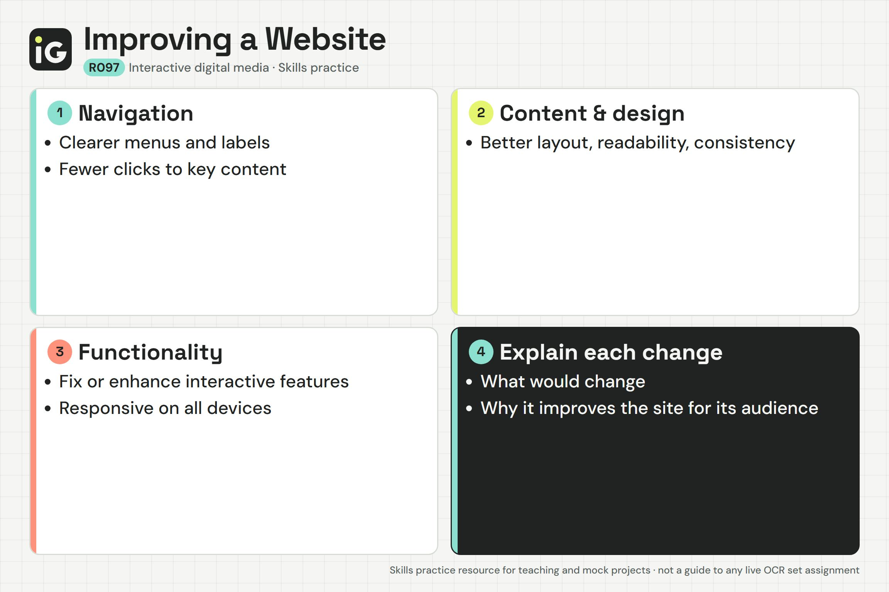

Visual
- Contrast, resizable text, readability

Explain how you could improve your website.
After testing and reviewing feedback, you must show how you improved your IDMP. This should be written up in your project log and supported with screenshots. The key idea is simple: identify a problem → make a change → explain why the change makes the website better.
Don't just say "I changed it because it looked better". Explain why the change improves the website.
Use this checklist to make sure you can cover every part of this topic.
Accessibility features let more people use a product – including people using screen readers, keyboards, small screens or who can't hear audio.